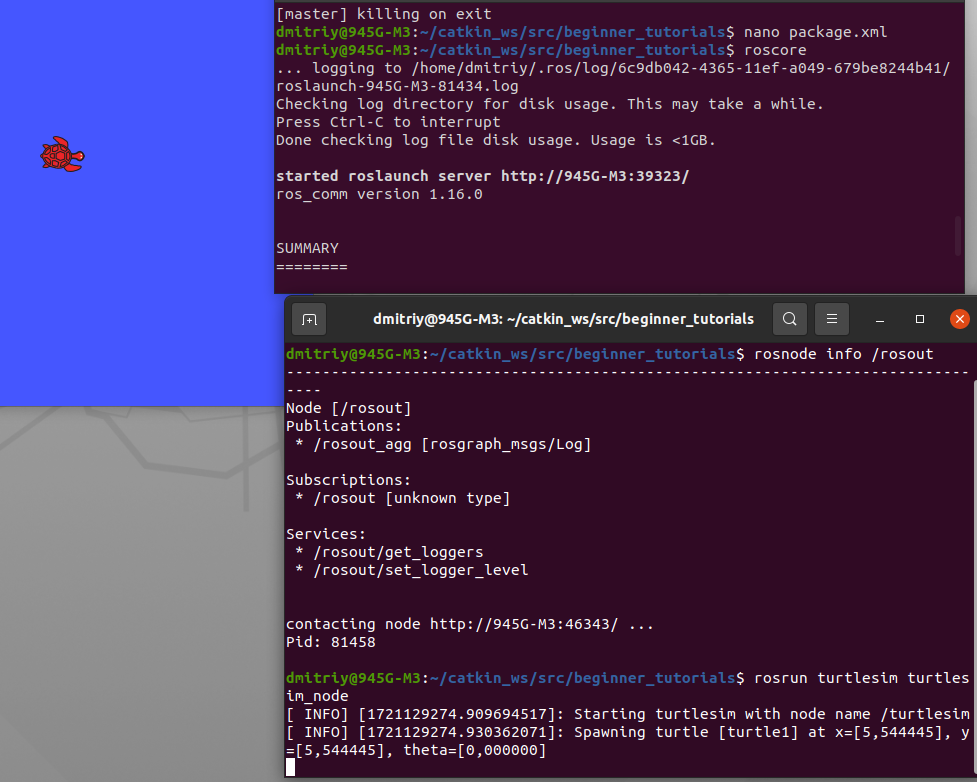
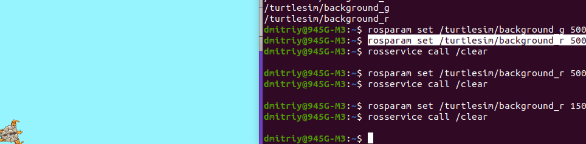

Основные концепции системы ROS
Ссылки: Основные концепции системы ROSФайловая система ROS
Концепция файловой системы ROS в основном относится к ресурсам ROS, находящимся на диске, таким как:- Пакеты (Packages): Пакет – основная единица файловой системы ROS. В основном пакет содержит выполняемые процессы ROS (узлы или ноды - nodes), библиотеки на основе ROS, наборы данных, конфигурационные файлы и прочие полезные данные. Пакет – это минимальная единица для компиляции и релиза в ROS.
Команды для работы с пакетами:- Поиск пакета: rospack find [package_name]

- roscd: roscd <package-or-stack>[/subdir] переход к указанному пакету.

- Чтобы увидеть список каталогов, где находятся пакеты, служит команда: echo $ROS_PACKAGE_PATH
- roscd log приведет вас к папке, в которой хранятся файлы журнала ROSS. Обратите внимание, что если вы еще не запускали какие-либо программы для ROM, это приведет к ошибке, указывающей на то, что они еще не существуют.
- rosls <package-or-stack>[/subdir] показывает состав пакета, обращаясь к нему по имени, а не по абсолютному пути.

Клавиша TAB выполняет функцию автозаполнения или если дважды, то список вариантов. Например напишем ros и нажмем дважды TAB, выведутся все команды ros'а.
rosls и дважды TAB, то выведет список установленных пакетов.
- Поиск пакета: rospack find [package_name]
- Метапакеты (Metapackages): Метапакеты – это специализированные Пакеты, используемые для группировки других взаимосвязанных Пакетов. Используются также для обратной совместимости.
- Манифесты Пакетов (Package Manifests): Манифест (package.xml) содержит данные о пакете, включая имя, версию, описание, информацию о лицензировании, зависимости и прочую информацию, такую как экспортируемые пакеты.
- Репозитории (Repositories): набор пакетов, принадлежащих одной и той же версии. Пакеты одной и той же системы контроля версий и одинаковой версии могут выпускаться вместе с помощью инструмента автоматизации релизов bloom (http://wiki.ros.org/bloom). Репозиторий также может содержать только один пакет.
- Типы сообщений (Message types): описание сообщений, хранится в my_package/msg/MyMessageType.msg, определяет структуры данных для сообщений, передаваемых в ROS.
- Типы сервисов (Service types): описание сервисов, хранится в my_package/srv/MyServiceType.srv, определяет структуры данных для запроса и ответа сервисов в ROS.
- Рабочая область (Workspace) в ROS — это папка, где разработчики создают, собирают и настраивают свои пакеты и программы. Содержит исходный код, пакеты и сборочные скрипты.
Основная структура:- src: директория исходного кода, где хранятся пакеты ROS
- build: временная директория, используемая во время сборки пакетов
- devel: содержит файлы, необходимые для запуска программ после сборки, включая исполняемые файлы и среду окружения
Граф вычислений ROS
Граф вычислений ROS – это одноранговая сеть процессов ROS, обрабатывающих данные. Основные понятия, связанные с графом вычислений – это ноды (nodes), Мастер (Master), Сервер Параметров (Parameter Server), сообщения (messages), сервисы (services), топики (topics), контейнеры (bags). Все эти сущности передают данные для вычислительного графа ROS разными способами.- Мастер ROS
Мастер выполняет роль сервера имен для возможности подключения между собой различных нод. Связь между нодами (обмен сообщениями), невозможна без запущенного мастера. Запускается командой:roscore
При запуске ROS roscore, мастер будет запущен по адресу URI, установленным в переменной окружения ROS_MASTER_URI. По умолчанию адрес использует IP-адрес локального ПК и номер порта 11311
Ноды связываются с другими Нодами напрямую. Мастер только предоставляет информацию для поиска, подобно DNS серверу. Ноды, которые подписываются на топик, запрашивают связь с Нодами, которые публикуют данные в этот топик, и устанавливают эту связь через соответсвующий согласованный протокол. Наиболее часто используемый протокол – TCPROS, он использует стандартные TCP/IP
- Ноды (Nodes):
Ноды (узлы)– это программы (обычно написанные на Python или C++), которая взаимодействуют с другими нодами посредством ROS-топиков и ROS-сервисов. Одна нода управляет лазерным дальномером, другая – моторами колёс, третья нода определяет положение в пространстве, четвёртая планирует траекторию движения, пятая предоставляет графическое представление системы, и т.д.Узлы ROS используют клиентские библиотеки ROS для взаимодействия с другими узлами, написанных на разных языках программирования:
rospy = клиентская библиотека python
roscpp = клиентская библиотека c++При запуске нода регистрирует информацию о себе на мастере (название ноды, типы обрабатываемых сообщений). Зарегистрированная нода может взаимодействовать с другими нодами (получать и отправлять запросы). Важно отметить что обмен сообщениями между нодами работает без участия мастера (соединение между нодами происходит напрямую через топик). Мастер обеспечивает только единое пространство имен для решения вопроса куда подключиться к конкретной ноде. Адрес запуска ноды, берётся из переменной окружения ROS_HOSTNAME, которая должна быть определенна до запуска. Порт устанавливается на произвольное уникальное значение.
- Сервер параметров (Parameter Server): Сервер параметров позволяет хранить данные с доступом по ключу в централизованном хранилище. В настоящее время Сервер Параметров является частью Мастера.
Параметры в ROS представляют собой глобальные значения, которые можно использовать для настройки поведения узлов (nodes).
Параметры могут быть различных типов: числа (целые и вещественные), строки, булевы значения, массивы и так далее.
Для того, чтобы ноды могли использовать parameter, используем библиотечные функции либо с терминала команды rosparam.
Некоторые команды с параметрами:- Показать список всех параметров: rosparam list
- Установить значение параметра: rosparam set
- Получить значение параметра: rrosparam get
- Загрузить параметры из файла YAML: rosparam load
- Сохранить параметры в файл YAML: rosparam dump
Как я понял ROS Parameter представляет собой массив (словарь) глобальных переменных, которые доступны для всех нод.
- Сообщения (Messages):
Ноды отправляют и принимают данные между собой, согласно заданного формата. Эти данные называют Сообщения, а описание Типом Сообщения. - Топики (Topics):
Сообщения передаются через механизм публикации/подписки. Нода отправляет сообщение, публикуя (publish) его в определённом Топике. Топик – это имя, идентифицирующее содержание сообщения. Нода, заинтересованная в определённых данных, осуществляет подписку (subscribe) на соответствующий Топик. Для одного топика может существовать несколько параллельно публикующих/подписанных на него Нод, равно как и одна Нода может публиковать сообщения в и/или подписываться на несколько Топиков. В общес случае, публикаторы/подписчики не оказывают влияния друг на друга. Идея заключается в отделении производства информации от её использования. Логически Топик может быть представлен как строго типизированная шина сообщений. У каждой шины есть наименование, и любой элемент может подсоединиться к шине для получения и отправки сообщений соответствующего типа.- Топик (тема) — это имя для потока сообщений
- Узлы общаются между собой посредством топиков
- Узлы могут публиковать или подписываться на топик
- Как правило, у топика один издатель и n подписчиков
- Сервисы (Services): Модель публикации/ подписки является очень гибкой, но её схема односторонней передачи сообщений «многие-многим» не подходит для взаимодействий типа «запрос-ответ», которые часто нужны в распределённой системе. Механизм «запрос-ответ» реализован через Сервисы. Сервис определяется парой структур сообщений – одна для запроса и одна для ответа. Нода предоставляет сервис, используя определённое Имя сервиса, клиент использует сервис, отправляя сообщение-запрос и ожидая ответа. Клиентские библиотеки ROS обычно представляют это взаимодействие для программиста в виде вызова удалённой процедуры.
Некоторые команды с сервисами:- Показать список активных сервисов: rosservice list
- Вызвать сервис с определёнными аргументами: rosservice call
- Показать структуру .srv-файла для заданного типа сервиса: rossrv show [service_type]
- Контейнеры (Bags): Контейнеры предоставляют форматы для записи и воспроизведения потоков ROS-сообщений. Контейнеры являются важным механизмом для записи данных, например, данных с сенсоров, которые трудно собрать, но необходимо сохранять для разработки и тестирования алгоритмов.
Имена
Ссылки: NamesИмена ресурсов графа представляют собой иерархическую структуру имен, которая используется для всех ресурсов в графе вычислений ROS, таких как узлы, параметры, разделы и службы. Эти имена очень важны в ROS и играют центральную роль в создании более крупных и сложных систем в ROS, поэтому очень важно понимать, как работают эти имена и как вы можете ими манипулировать.
Любой топик, сервис или параметр идентифицируется с помощью уникального имени. ROS-имя представляет собой иерархическую структуру с символом / в качестве разделителя (сходно с именами в файловой системе).
Примеры ROS-имен:
/ (глобальное пространство имен)
/foo
/stanford/robot/name
/wg/node1
Имена разрешаются относительно, поэтому ресурсам не нужно знать, в каком пространстве имен они находятся. Это упрощает программирование, поскольку узлы, которые работают вместе, могут быть записаны так, как если бы все они находились в пространстве имен верхнего уровня. Когда эти узлы интегрируются в более крупную систему, их можно поместить в пространство имен, определяющее их набор кода. Например, можно взять демонстрационную версию Stanford и демонстрационную версию Willow Garage и объединить их в новую демонстрационную версию с подграфами stanford и wg. Если бы у обеих демонстраций был узел с именем "camera", они бы не конфликтовали. Инструменты (например, визуализация графика), а также параметры (например, demo_name), которые должны быть видны всему графику, могут быть созданы узлами верхнего уровня.
Допустимые имена
Допустимое имя имеет следующие характеристики:- Первый символ - это буквенный знак ([a-z|A-Z]), тильда (~) или косая черта (/)
- Последующие символы могут быть буквенно-цифровыми ([0-9|a-z|A-Z]), символами подчеркивания (_) или косой черты (/).
В ROS существует четыре типа имен графических ресурсов: базовые, относительные, глобальные и частные, которые имеют следующий синтаксис:
- base
Имена без каких-либо определителей пространства имен являются базовыми именами. Базовые имена на самом деле являются подклассом относительных имен и имеют те же правила разрешения. Базовые имена чаще всего используются для инициализации имени узла. - relative/name
По умолчанию разрешение выполняется относительно пространства имен узла. Например, узел /wg/node1 имеет пространство имен /wg, поэтому имя node2 будет преобразовано в /wg/node2. - /global/name
Имена, начинающиеся с "/", являются глобальными - они считаются полностью разрешенными. По возможности следует избегать глобальных имен, поскольку они ограничивают переносимость кода. - ~private/name
Имена, начинающиеся с "~", являются частными. Они преобразуют имя узла в пространство имен. Например, узел 1 в пространстве имен /wg/ имеет частное пространство имен /wg/node1. Личные имена полезны для передачи параметров определенному узлу через сервер параметров.
Вот несколько примеров разрешения имен:

Приватное имя
Каждая нода может использовать собственное приватное пространство имен (соответствующее имени ноды) для своих ресурсов. Например, нода aruco_detect может публиковать такие топики:
/aruco_detect/markers
/aruco_detect/visualization
/aruco_detect/debug
Когда нода ссылается на свой приватный ресурс, вместо пространства имен (/aruco_detect/) используется символ ~, например:
~markers
~visualization
~debug
Таким образом, создание топика foo в приватном пространство имен из Python будет выглядеть так:
private_foo_pub = rospy.Publisher('~foo', String, queue_size=1)
Относительное имя
Несколько нод также могут объединяться в общее пространство имен (например, при одновременной работе нескольких роботов). Для того, чтобы ссылаться на топики с учетом общего пространства имен, в названии ресурса опускается начальный символ /.
Пример создание топика foo с учетом общего пространства имен:
relative_foo_pub = rospy.Publisher('foo', String, queue_size=1)
Пример:
для контроля лазерного дальномера мы запускаем драйвер hokuyo_node, который опрашивает лазер и публикует sensor_msgs/LaserScan сообщения в топик scan. Дла обработки этих данных, мы можем написать, используя пакет laser_filters, ноду, которая подписывается на сообщения топика scan. После подписки наш laser_filters автоматически начнёт получать сообщения от лазера.
Теперь о том, как происходит разделение. Нода hokuyo_node только публикует сообщения, не зная о том, подписан ли на них кто либо. Нода пакета laser_filters только подписывается на сообщения топика, не зная о том, публикует ли кто-то туда сообщения. Обе ноды могут быть запущены, остановлены, перезапущены, в любом порядке, не порождая при этом ошибок.
Далее мы можем добавить роботу другой лазерный дальномер, поэтому нужно переконфигурировать систему. Всё что нужно при этом – переназначить (remap) используемые имена. При запуске ноды hokuyo_node мы можем вместо имени scan переназначить имя base_scan. B то же самое сделать с нодой – фильтром. Теперь обе эти ноды будут связаны с использованием топика base_scan, и перестанут обрабатывать сообщение тописа scan. После этого мы можем запустить ещё одну ноду hokuyo_node для нового лазерного дальномера.
Имена ресурсов пакетов
Имена ресурсов пакетов используются в ROS с концепциями на уровне файловой системы для упрощения процесса обращения к файлам и типам данных на диске. Имена ресурсов пакетов очень просты: это просто название пакета, в котором находится ресурс, плюс название ресурса. Например, имя "std_msgs/String" относится к типу сообщения "String" в пакете "std_msgs".Имена ресурсов пакетов очень похожи на пути к файлам, за исключением того, что они намного короче. Это связано со способностью ROS находить пакеты на диске и делать дополнительные предположения об их содержимом. Например, описания сообщений всегда хранятся в подкаталоге msg и имеют расширение .msg, поэтому std_msgs/String - это сокращение от path/to/std_msgs/msg/String.msg. Аналогично, тип узла foo/bar эквивалентен поиску файла с именем bar в пакете foo с правами доступа к исполняемому файлу.
Допустимые имена
Имена ресурсов пакетов имеют строгие правила именования, поскольку они часто используются в автоматически генерируемом коде. По этой причине в пакете ROS не может быть специальных символов, кроме символа подчеркивания, и они должны начинаться с алфавитного знака. Допустимое имя имеет следующие характеристики:
- Первый символ - это буквенный знак ([a-z|А-Язь])
- Последующие символы могут быть буквенно-цифровыми ([0-9|а-язь|А-Язь]), символами подчеркивания (_) или косой черты (/).
- Существует не более одной косой черты ('/').
Ноды (узлы)
Ссылки: Занятие № 2: Детальное представление о средеПрежде чем выполнять команды над нодами, следует вызвать мастера ROS, команда:
roscore
И после этого в другом терминале выполнять команды.
Если вы хотите чтобы roscore запустился в фоновом режиме, то запустите его командой:
roscore &
Список активных нод:
rosnode list - выводит список этих активных узлов.Если не запускали какую-нибудь ноду, то покажет только rosout. Он всегда запущен, поскольку собирает и регистрирует выходные данные отладки узлов.
rosnode info <name_node> - покажет информацию о ноде.
Пример:

Запуск нод
Запуск нод в ROS осуществляется при помощи команды rosrun. Общий синтаксис употребления этой команды выглядит так:rosrun <пакет> <нода> [<имя параметра>:=<значение>]
Причём в графе <нода> указывается не произвольное имя новой ноды, а класс-тип нод, экземпляр которого нужно запустить. Непосредственно имя ноды устанавливается через параметры.
rosrun [package_name] [node_name] - позволит выполнить ноду node_name внутри пакета package_name без указания пути к этому пакету.
Например выполнить turtlesin_node внутри пакета turtlesim.

Будет запущена нода типа turtlesim_node из пакета turtlesim. Имя ноды в данном случае не указывалось и оно присвоится автоматически. Теперь, если в новом терминале ввести команду:
rosnode list
в ответ будет получено следующее:
/rosout /turtlesimТаким образом создалась ещё одна нода с именем /turtlesim и определённая в глобальном поле имён, о чём говорит предшествующий символ слеш “/”. Если в новом терминале вновь будет выполнена команда:
rosrun turtlesim turtlesim_node
То создастся новая нода с тем же именем /turtlesim. Это вызовет аварийную остановку уже созданной ноды:
[ WARN] [1471851936.261860979]: Shutdown request received. [ WARN] [1471851936.261924457]: Reason given for shutdown: [new node registered with same name]Для того, чтобы указать имя ноды, при её создании необходимо присвоить значение переменной __name (с двумя символами нижнего подчёркивания). Таким образом, чтобы создать ноду с именем “turtle_node” необходимо выполнить команду:
rosrun turtlesim turtlesim_node __name:=turtle_node
Пинг ноды:
rosnode ping [node_name] - пингуем ноду, чтобы проверить, что она запущена.
Команды rostopic:
- rostopic echo [topic] - показывает данные, публикуемые в топик.
- rostopic list - возвращает список всех топиков, на которые в данный момент подписаны и которые публикуют.
Опции этой команды:- -h, --help show this help message and exit
- -b BAGFILE, --bag=BAGFILE список топиков в .bag file
- -v, --verbose дополнительно показывает сколько подписчиков и публицистов на топики завязано.
- -p список только публицистов
- -s список только подписчиков

- Тип сообщений:
Ноды общаются между собой с помошью messages (сообщений). Чтобы ноды понимали друг друга, сообщения должны иметь одинаковый тип. Чтобы узнать тип сообщений, служит команда:
rostopic type [topic]
Вернёт тип (имя) сообщений, используемого для топика.

Чтобы посмотреть детали этого сообщения, используется команда:
rosmsg show [name_meesage]

- Отправка сообщений в топик:
зная тип (имя) сообщений, мы можем отправлять их ноде через топик, тем самым управлять нодой.
Синтаксис:
rostopic pub [topic] [msg_type] [args]
публикует данные по объявленному топику.

- -1 Этот параметр приводит к тому, что rostopic публикует только одно сообщение, а затем завершает работу
- /turtle1/cmd_vel - это имя топика, в который отправляем (публикуем) сообщение
- geometry_msgs/Twist - это тип (имя) сообщения, которое отправляем в топик.
- -- - этот параметр (двойное тире) указывает анализатору параметров, что ни один из следующих аргументов не является параметром. Это необходимо в тех случаях, когда ваши аргументы начинаются с тире -, например, с отрицательных чисел.
- '[2.0, 0.0, 0.0]' '[0.0, 0.0, 1.8]' - сообщение geometry_msgs/Twist содержит два вектора по три элемента с плавающей запятой в каждом: линейный и угловой. В этом случае, '[2.0, 0.0, 0.0]' становится линейным значением при x=2.0, y=0.0 и z=0.0, а '[0.0, 0.0, 1.8]' - угловым значением при x=0.0, y=0.0 и z=1.8. Эти аргументы приведены в синтаксисе YAML.
Чтобы не запоминать формат сообщения, можно после типа сообщения дважды нажать клавишу tab. Это выпишет имена полей и рядом начальные значения, которыми они инициализируются. Далее их можно изменить.
Мы можем опубликовать постоянный поток команд, используя опцию -r:

rostopic hz [topic] - сообщает о скорости публикации данных в [topic].
- rostopic bw Показать занимаемый сетевой канал
- rostopic echo Вывести сообщения на экран
- rostopic find Поиск топика по типу
- rostopic hz Показать частоту обновления топика
- rostopic info Показать информацию о топике
- rostopic list Показать список существующий топиков
- rostopic pub Опубликовать данные в топик
- rostopic type Показать тип сообщения для топика
Команды rosparam:
rosparam позволяет хранить данные на сервере параметров ROS и манипулировать ими. Сервер параметров может хранить целые числа, значения с плавающей запятой, логические значения, словари и списки. Для синтаксиса rosparam использует язык разметки YAML. В простых случаях YAML выглядит очень естественно: 1 - целое число, 1.0 - число с плавающей точкой, "единица" - строка, true - логическое значение, [1, 2, 3] - список целых чисел, {a: b, c: d} - словарь. В rosparam есть множество команд, которые можно использовать для работы с параметрами:- rosparam list - список параметров

- rosparam set [param_name] - устанавливаем значение параметра [param_name]
Пример: $ rosparam set /turtlesim/background_r 150
rosparam get [param_name] - выводит значение параметра

Чтобы изменение параметра вступило в силу, нужно вызвать службу чистильщика (/clean). - Команда rosparam get / выведет значения всех параметров на сервере параметров.

rosparam get name_parametr - выводит значение параметра name_parametr:

- Если хотим сохранить этот набор параметров, чтобы потом вызвать, то служит команда:
rosparam dump [file_name] [namespace] - записываем все параметры в файл [file_name] - Вызвать сохранённый набор параметров [file_name] для [namespace], служит команда:
rosparam load [file_name] [namespace]
Команда rosed
Синтаксис:rosed [package_name] [filename]
Служит для редактирования файла [filename] из пакета [package_name].
По умолчанию редактором является vim. Чтобы редактором для команды rosed был более простой nano, следует в файл ~/.bashrc добавить строку:
export EDITOR='nano -w'
Получение подсказки по команде
Познакомились с довольно большим количеством инструментов ROS. Иногда бывает сложно отследить, какие аргументы требуются для каждой команды. К счастью, большинство инструментов ROS предоставляют свою собственную помощь. Чтобы получить подсказку по команде, достаточно опции -h: